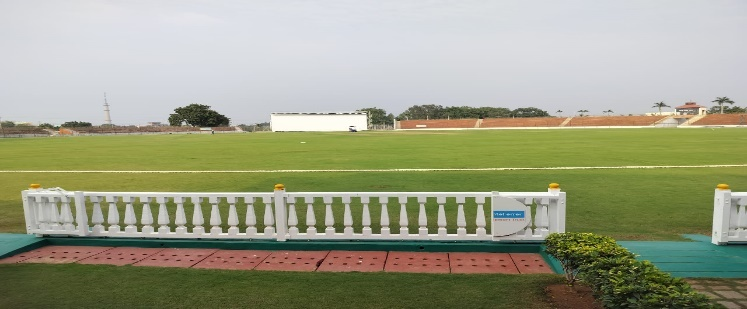
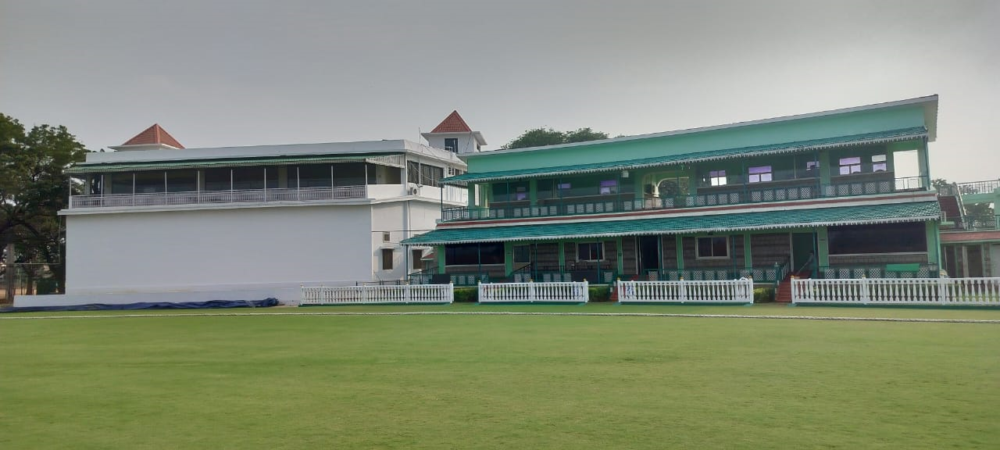
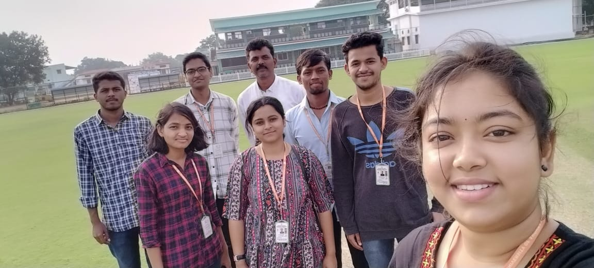
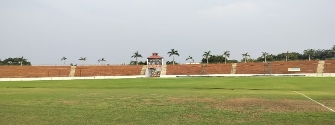

ASV Cricket Academy
   
The inception of the Cricket Academy at Ananthapuram Sports Village (ASV) in 2004 marked a transformative moment in the landscape of cricketing talent development. Originally tailored for day-scholars, the academy underwent a pivotal evolution in 2010 with the introduction of a residential program. This paradigm shift aimed to harness the potential of highly talented and motivated athletes, propelling them towards success at advanced levels of cricketing competition.
The selection process for these exceptional athletes is meticulously orchestrated through a structured Talent Identification (Talent ID) program developed by Rural Development Trust (RDT). Drawing participants from various RDT Cricket coaching centers at the grassroots level, this Talent ID program serves as a crucible for identifying and nurturing emerging cricketing talent. The objective is clear: to spot individuals with not only innate skill but also an unwavering determination to excel in the sport. As of today, ASV's Cricket Academy stands as a beacon of cricketing excellence, supporting a total of 70 boys competing across Under-14, Under-16, and Under-19 age groups. These aspiring cricketers undergo a holistic developmental journey, where their skills are honed, and their character is molded under the guidance of four dedicated full-time coaches. The coaching team's commitment extends beyond the technical aspects of the game, fostering values of discipline, teamwork, and resilience.
Beyond the realms of developmental training, ASV has become a pivotal hub for competitive cricket. The academy hosts prestigious tournaments, including matches affiliated with the Assam Cricket Association (ACA) inter-zone competitions and the revered Board of Control for Cricket in India (BCCI) Ranji Trophy. These platforms provide the academy's cricketers with exposure to high-stakes competitions, enabling them to test their mettle against formidable opponents. Adding a grassroots flavor to the cricketing fervor, the Ananthapuram Premier League (APL) has emerged as a vibrant cricket league. Active for nearly half the year with weekend matches, APL not only adds a layer of community engagement but also serves as a crucible for discovering local talents who might shape the future of cricket in the region.